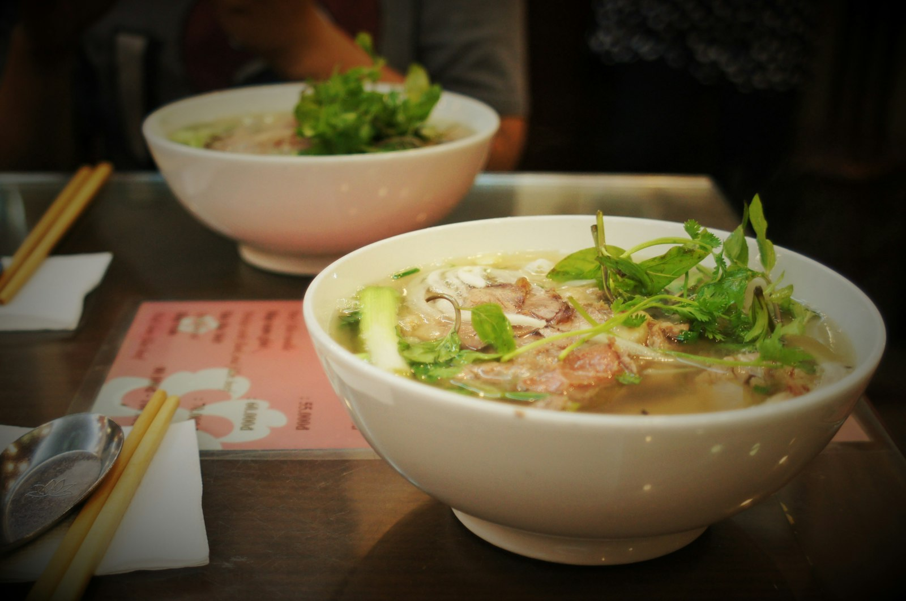
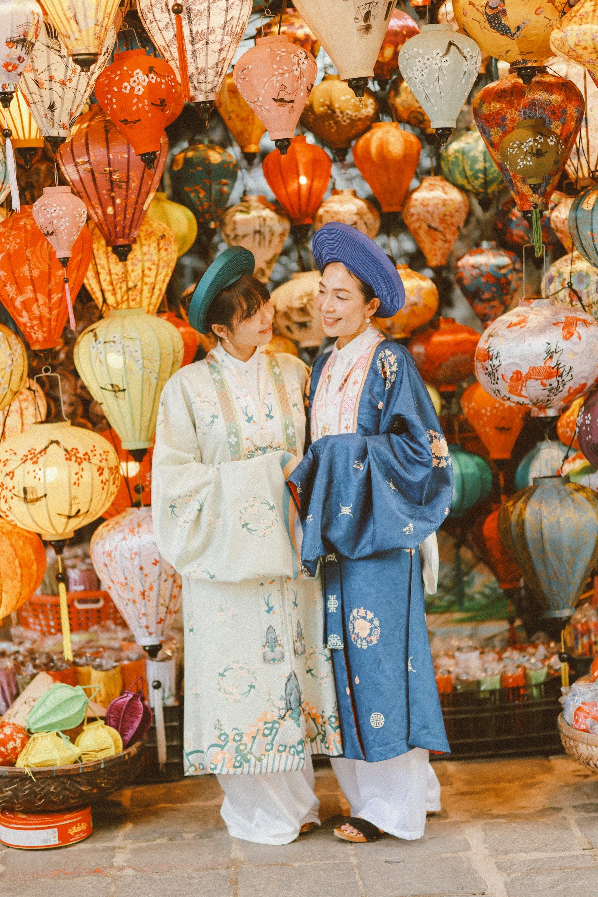
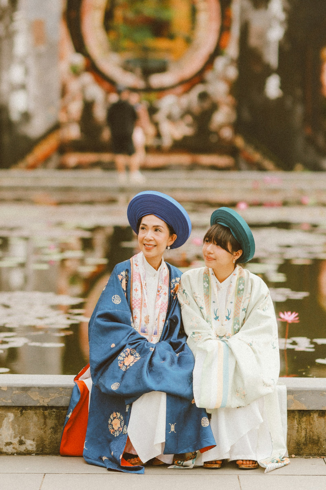
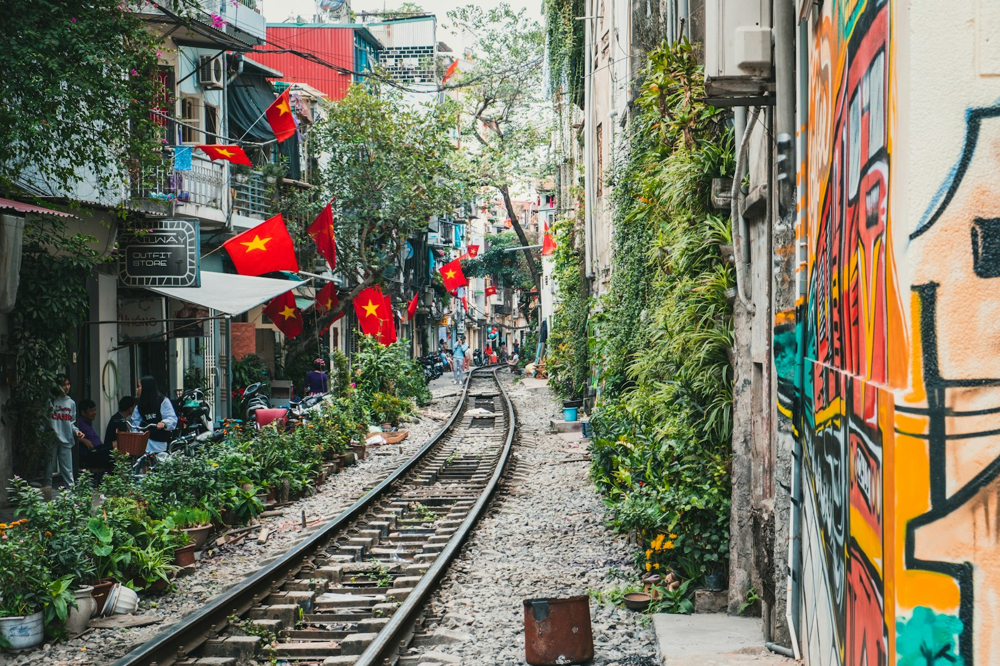

Phở
Nước dùng ninh xương, bánh phở mềm, ăn kèm rau thơm — món quốc hồn được yêu thích toàn cầu.
01 · Lịch sử
Việt Nam mang dấu ấn của nền văn minh sông Hồng, các triều đại phong kiến, kháng chiến giữ nước và công cuộc đổi mới. Từ Văn Lang – Âu Lạc đến Đại Việt, lịch sử được kể bằng cả sử sách và di tích còn sống trong đời thường.
Thế kỷ XX đánh dấu các bước ngoặt lớn: giành độc lập năm 1945, thống nhất đất nước năm 1975, và Đổi mới từ 1986 mở cửa hội nhập. Ngày nay, Việt Nam là điểm đến của giao lưu quốc tế — trong đó có quan hệ hữu nghị Việt–Hàn ngày càng sâu sắc.

02 · Ẩm thực
Ẩm thực Việt chú trọng sự hài hòa: mặn – ngọt – chua – cay – umami, kèm rau sống và nước chấm. Mỗi vùng miền mang một “giọng” riêng — Bắc thanh đạm, Trung đậm đà, Nam ngọt dịu.
Nước dùng ninh xương, bánh phở mềm, ăn kèm rau thơm — món quốc hồn được yêu thích toàn cầu.
Từ bún chả Hà Nội đến bánh mì giòn tan — ẩm thực đường phố đầy sức sống.
Nhịp sống chậm ở quán cóc: đậm, ngọt, mát — đặc sản giao tiếp xã hội của người Việt.
Mì Quảng, bánh xèo, hải sản Đà Nẵng — hương vị đặc trưng của miền Trung Việt Nam.

03 · Lễ hội
Lễ hội Việt Nam gắn với nông lịch, tín ngưỡng và đoàn tụ. Tết Nguyên Đán là dịp lớn nhất trong năm: gói bánh chưng, chúc Tết, lì xì, và khởi đầu mới cho gia đình.
Ngoài Tết còn có Trung Thu với đèn ông sao, lễ hội đền chùa, và các lễ hội địa phương như đêm phố cổ Hội An — không gian gần Đà Nẵng, nơi văn hóa sống động giữa du khách và người bản địa.

04 · Trang phục
Áo dài là biểu tượng trang phục Việt: dáng dài, tà mềm, tôn vẻ thanh lịch. Học sinh, sinh viên thường mặc áo dài trắng trong ngày lễ; áo dài màu được chọn cho cưới hỏi và biểu diễn.
Bên cạnh áo dài còn có áo tứ thân, khăn mỏ quạ của phụ nữ Bắc Bộ xưa, và trang phục dân tộc của 54 cộng đồng — mỗi sắc màu kể một câu chuyện vùng miền.

05 · Di sản
Việt Nam sở hữu nhiều di sản được UNESCO ghi danh: Vịnh Hạ Long, Phong Nha – Kẻ Bàng, phố cổ Hội An, thánh địa Mỹ Sơn, nhã nhạc cung đình Huế, và nhiều không gian văn hóa khác.
Từ miền núi phía Bắc đến biển miền Trung và đồng bằng sông Cửu Long — mỗi vùng đất mang một lớp ký ức văn hóa riêng để bạn bè quốc tế khám phá.
Mỗi món ăn, lễ hội hay di sản là một lời chào. Cầu Nối Việt–Hàn mời bạn mang sự tò mò ấy vào hành trình giao lưu hai nước.